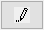

Mit Datei verbinden
Connect-to-File
Datenkonnektoren stellen eine Verbindung zwischen einem/r Origin-Arbeitsblatt/-Matrix und einer Datendatei auf Ihrem PC oder einem lokalen Netzwerk dar. Es werden viele gängige Dateitypen unterstützt.
Eine Zusammenfassung der Schlüsselunterschiede zwischen Konnektoren und älteren Importmethoden lesen Sie bitte FAQ-1020 Gibt es einen Unterschied zwischen Verbinden und Importieren?.
 | Neue Diagrammtypen mit dem Menü Neu hinzufügen hinzufügen
Sie können Konnektoren für zusätzliche Dateitypen hinzufügen, indem Sie den Befehl Neu hinzufügen unten im Menü Daten: Mit Datei verbinden wählen. Dadurch wird das App-Center geöffnet, um nur die nicht installierten Konnektoren zu zeigen. Klicken Sie auf das Symbol Download and Install, um die Konnektor-App auf Ihrem PC zu installieren. Alternativ gehen Sie zum Origin-Dateiaustausch auf der OriginLab-Webseite und wählen einen Konnektor aus der Liste aus. Klicken Sie auf der Seite App auf die Schaltfläche Download File. Wenn der Download beendet ist, ziehen Sie die Datei auf den Origin-Arbeitsbereich. Die Dokumentation zur App können Sie im Abschnitt Description der Seite einsehen. Menü Mit Datei verbinden benutzerdefiniert anpassen
Sie können das Menü Daten: Mit Datei verbinden benutzerdefiniert anpassen, indem Sie Daten: Mit Datei verbinden: Benutzerdefiniert anpassen ... wählen.
Alle installierten Datenkonnektoren werden hier aufgeführt. Sie können die Kontrollkästchen verwenden, um zu entscheiden, welche sie im Menü Daten: Mit Datei verbinden zeigen. |
Einen Konnektor zur Mappe hinzufügen
Um einen Datenkonnektor zur Mappe hinzuzufügen und Daten zu importieren:
- Wählen Sie bei aktivem/r Arbeitsblatt/Matrix Daten: Mit Datei verbinden: Datentyp.
- Wählen Sie eine gewünschte Datendatei im Dialog Öffnen .
Der zum Konnektor zugehörige Dialog wird geöffnet, in dem Sie Ihre Importoptionen konfigurieren können.
- Für mehrseitige Dateien wie MS Excel oder MATLAB wählen Sie ein Anfangsblatt für den Import (z. B. Excel-Blatt). Beim Import wird ein minimierbarer Datennavigator zur Mappe hinzugefügt, der Ihnen Zugriff auf die restlichen Blätter der Datei gewährt.
- Der Name der verbundenen Datei wird als der Langname hinzugefügt (gilt nicht für CSV- oder Origin-Dateien).
- Beim Verbinden von Matrixmappen mit Dateien werden der Bildmodus und die Schieber/Miniaturbilder automatisch aktiviert, wenn die Anzahl der importierten Matrizen den Wert der Systemvariablen @MSS überschreitet (Standard = 10). Dies gitl nicht für Origin-Dateien. Eine Anleitung, wie Sie den Wert einer Systemvariablen ändern, finden Sie in dieser FAQ.
Text-/CSV-Konnektor
Verwenden Sie den Text-/CSV-Konnektor, um Textdateien, wie CSV, TXT und ASC zu importieren.
- Bestimmen Sie automatisch die Hauptheaderzeilen oder deaktivieren Sie das Kontrollkästchen und legen Sie die Haupt- und Subheader manuell fest, einschließlich Langname, Einheiten und Kommentare. Hinweis: Ein blauer Hinweis zeigt die Anzahl der auomatisch erkannten Hauptheaderzeilen an.
- Wenn Hauptheaderzeilen erkannt oder manuell festgelegt werden, zeigt der Importdialog eine Auswahlliste Dateiheader speichern in mit Optionen zum Speichern des Dateiheaders im Bereich der Arbeitsblattbeschriftung oder im Mappenorganizer.
| CSV-Importoptionen |
CSV-Importoptionen, Hauptheaderzeilen |
|
|
- Wenn die importierte Datei (zum Beispiel einige *.pil-Dateien) eine Trennlinie beinhaltet, um den Header von den Daten zu trennen, so etwas wie ">END OF HEADER", dann deaktivieren Sie Auto neben Hauptheaderzeilen, geben Sie 0 unter Hauptheaderzeilen ein, aktivieren Sie das Kontrollkästchen Hauptheader endet mit und geben Sie den definierten Trennungstext im Kombinationsfeld ein.
- Sie können entweder die Ersten 50 Zeilen als Vorschau importieren oder teilweise Importieren.
- Klicken Sie auf die Schaltfläche Weitere Optionen (links von OK) für weitere Optionen:
- Sparklines hinzufügen: Sparklines werden bei Import aktiviert. Um Sparklines beim Import zu deaktivieren, setzen Sie @IMPS = 0.
- Mit Dateiname umbenennen: Nur CSV. Optionen für Blatt und Mappenlangname.
- Als Standard festlegen: Nur CSV: Schaltfläche zum Festlegen von Sparklines und Mit Dateiname umbenennen als Standard.
- LabTalk-Skript nach Import: Skript für die Nachverarbeitung der Daten beim Import ausführen.
| LabTalk-Skript nach Import kann verwendet werden, um eine Variable aus den Datenzellen () anstatt aus den Headerzeilen zu extrahieren. Im nächsten Abschnitt finden Sie dazu ein Beispiel. |
- Sie können das gesamte Arbeitsblatt nach einer ausgewählten Spalte sortieren (Rechtsklick und Auswahl von Worksheet sortieren), nachdem Sie Daten über den CSV-Datenkonnektor importiert haben.
- Wenn Sie mehrere CSV-Dateien in dasselbe Arbeitsblatt importieren und sie nach Zeilen anhängen möchten, können Sie die LabTalk-Skripte dafür verwenden. Bitte lesen Sie den Abschnitt zu "EX2" auf dieser LabTalk-Dokumentseite.
Variable aus Datenzellen extrahieren
Um Informationen aus einer Datenzelle zu extrahieren und sie in einer Arbeitsblattvariable zu speichern, können Sie den Dialog LabTalk-Skript nach Import verwenden.
Im folgenden Beispiel enthält die erste Spalte das Versuchsdatum, und wir möchten es in eine benutzerdefinierte Variable extrahieren. Wir können die untenstehenden LabTalk-Skripte nach Import ausführen, um eine Zeichenkettenvariable "MDate" auf Blattebene hinzuzufügen und ihr den ersten Zellenwert zuzuweisen.
page.info.add(user); page.info.user.addsection(variables); string str1=left(col(A)[1]$, 10)$; page.info.user.variables.addstring(MDate, "%(str1$)"); del col(A);
Nach dem Import können Sie diese Variable, "MDate", im Mappenorganizer überprüfen.

Datenblockmarkierungen
Falls Ihre Datei eine Mischung aus Daten und Nicht-Daten darstellt, können Sie diejenigen Zeichen definieren, die Datenblöcke darstellen:
- Verwenden Sie das Feld Anfang, um die Abfolge der Zeichen zu definieren, die den Anfang Ihrer Daten markieren. Falls diese Zeichenabfolge Abschnittsnotation verwendet (d. h., sie ist in eckigen Klammern eingeschlossen, wie [Data]), dann sollte Ende leer bleiben.
- Wenn Sie Abschnittsnotation verwenden, stellen Sie sicher, dass Hauptheaderzeilen = Auto.
- Unterstützung für das Sternchen ("*") als Platzhalter (z. B. sucht "-*" nach einem Strich mit einer Zeichenkette beliebiger Länge).
- Wenn eine leere Zeile das Ende des Datenblocks markiert, können Sie das Ende = <leer> festlegen.
Dateierweiterungen benutzerdefiniert anpassen
Sie können die Einstellungen der Dateierweiterung im CSV-Konnetor benutzerdefiniert anpassen und zwar in der Auswahlliste Dateityp im Dateibrowser, wenn Sie den Konnektor öffnen.
Um Dateierweiterungen benutzerdefiniert anzupassen:
- Aktivieren Sie die Registerkarte Konnektoren in der Apps-Galarie, die sich auf der rechten Seite des Origin-Arbeitsbereichs befindet.
- Klicken Sie mit der rechten Maustaste auf den CSV-Datenkonnektor und wählen Sie Dateierweiterungen benutzerdefiniert anpassen.
- Erweiterungen werden ";" getrennt.
- Klicken Sie auf die Schaltfläche Zurücksetzen, um die Systemstandardeinstellungen der Dateierweiterungen wiederherzustellen.
- Sie können auch die Dateierweiterung in der Datei Origin.ini bearbeiten.
Excel
Informationen zum Excel-Konnektor finden Sie unter Aus Excel importieren.
JSON/XML
Der Dialog Datenkonnektor-Browser wird geöffnet.

Das obere Feld lädt die Struktur der importierten Datei.
- Klicken Sie auf einen Zweig, um die Metadaten im rechten Bedienfeld anzuzeigen.
- Wählen Sie den gewünschten Zweig und klicken Sie auf den unten weisenden Pfeil, um ihn zum unteren Feld hinzuzufügen.
- Klicken Sie auf die Schaltfläche OK, um ausgewählte Daten zu verbinden und zu importieren.
- Wenn Ihre Datei mehrere Arrays enthält, verwenden Sie den Datennavigator, um zusätzliche Daten nach Bedarf zu verbinden.
Tipps:
- Wenn eine Verbindung zu MATLAB-, JSON- und NetCDF-Dateien hergestellt wird -- entweder lokale Dateien oder Webdateien -- werden benutzerdefinierte Blattnamen beibehalten, wenn die Verbindung zu Ihrer Datendatei erneut hergestellt wird (Import oder Alle Mappen importieren im Menü des Datenkonnektors
 ). Dies gilt nur für Dateitypen, die ein Baumframework verwenden und NICHT für andere Dateitypen wie Excel oder Text/CSV.
). Dies gilt nur für Dateitypen, die ein Baumframework verwenden und NICHT für andere Dateitypen wie Excel oder Text/CSV.
- Die Metadaten aus der importierten JSON-/XML-/Preship-XML-Datei werden im Arbeitsmappenorganizer gespeichert. Um die Metadaten anzuzeigen, klicken Sie auf die Schaltfläche ˅ links unten vom Arbeitsblatt, um den Bedienfeld des Organizers einzublenden. Um die Metadaten in die Beschriftungszeilen des Arbeitsblatts einzufügen, klicken Sie mit der rechten Maustaste auf den gewünschten Baumknoten im Organizer und wählen Sie Knotenpfad kopieren. Gehen Sie dann zur Spaltenbeschriftungszelle, klicken Sie mit der rechten Maustaste und wählen Sie Link einfügen.
MATLAB
Der Dialog Datenkonnektor-Browser wird geöffnet.
Das obere Bedienfeld listet alle Variablen in der Importdatei in Baumform auf. Es gibt eine Spalte rechts von jeder Variablen, die darauf verweist, wo jede Variable importiert werden kann. Die Optionen schließen Arbeitsblatt, Matrixblatt oder beides ein.
- Wählen Sie den gewünschten Zweig und klicken Sie auf den unten weisenden Pfeil, um ihn zum unteren Feld hinzuzufügen.
- Wenn eine Arbeitsmappe aktiv ist und die Datei entweder in eine Matrix importiert werden muss, wird ein Dialog aufgerufen, in dem Sie wählen können:

- Eine neue Matrixmappe verwenden - Dies ist der direkteste Weg.
- Eine eingebettete Matrixmappe verwenden - Diese Option importiert Daten in eine Matrix. Diese Matrix ist jedoch als Blatt in eine Arbeitsmappe eingebettet.
- Arbeitsblattspalten (kann langsam sein) - Diese Option importiert jeden Zeitrahmen der Matrix in mehrere Spalten, so dass sie ein Arbeitsblatt mit vielen Spalten erstellen und dadurch bei großen Datensätzen eine langsame Verarbeitungszeit verursachen kann.
- Wählen Sie die gewünschte Option und klicken Sie auf OK, um die Daten zu importieren.
- Wenn Ihre Datei mehrere Arrays enthält, verwenden Sie den Datennavigator, um zusätzliche Daten nach Bedarf zu verbinden.
HDF
Der HDF-Konnektor kann verwendet werden, um HDF5- (.h5, .he5, .hdf5) oder mat-Dateien der MATLAB-Version 7.3 zu importieren, die lokal oder im Web gespeichert sind. Weitere Informationen finden Sie auf dieser Seite des OriginLab-Dateiaustauschs.
Beachten Sie, wenn Sie eine Verbindung zu einer Datei herstellen, dass sich der Browser des Datenkonnektors öffnet, der alle Variablen in der Datei als einen Baum auflistet. Es gibt eine Spalte rechts von jeder Variablen, die darauf verweist, wo jede Variable importiert werden kann. Optionen umfassen Arbeitsblatt, Matrixblatt oder beides, wie im folgenden Diagramm gezeigt.
Sie können zu jedem Knoten in der Datei direkt eine Verbindung herstellen. Wenn ein Arbeitsblatt aktiv ist und die Variable mit Matrix gekennzeichnet ist, werden Sie aufgefordert, den Knoten in eine Matrixmappe zu importieren. Sie können sich jedoch dafür entscheiden, die Matrixdaten in eine Arbeitsmappe zu importieren, und Origin wird den Knoten automatisch als ein Matrixblatt zur aktiven Arbeitsmappe hinzufügen.
Wenn Sie eine Verbindung zum Hauptverzeichnis der Datei herstellen, wird der Datennavigator geöffnet, der Ihnen die Möglichkeit bietet, selektiv eine Verbindung zu einzelnen Knoten herzustellen. Wie erwähnt, werden Daten in das Blatt importiert, wenn sie mit dem aktiven Blatt kompatibel sind. Wenn ein anderer Blatttyp erforderlich ist, wird er zur aktiven Mappe hinzugefügt.

Tipps für HDF-Import
- Wie bei anderen komplex strukturierten Dateien (inkl. NetCDF) gibt es ein Navigatorfeld im Kontextmenü. Der HDF-Konnektor enthält einen einmaligen Eintrag -- Pfad kopieren -, der für diejenigen interessant sein könnte, die den Datenimport programmieren. Da das Kopieren eines Pfads tief in einer komplexen Baumstruktur schwierig sein kann, können Sie auf den Eintrag und Pfad kopieren klicken.
- Beim Programmieren des Imports mit dem HDF-Konnektor können Sie den Datenimport signifikant beschleunigen, indem Sie das Bedienfeld des Navigators nicht zeigen. Sie können dies tun, indem Sie ein Argument ("1") hinzufügen, wenn Sie den Konnektor hinzufügen.
wbk.dc.add("HDF", 1);
TDMS
Origins TDMS-Konnektor kann verwendet werden, um Daten aus .tdm- und .tdms-Dateien zu importieren.
Um eine TDMS-Datei zu importieren:
- Öffnen Sie eine neue Arbeitsmappe und wählen Sie Daten: Mit Datei verbinden: TDMS. Wählen Sie eine Datei und klicken auf Öffnen.
- Klicken Sie im Datenkonnektor-Browser doppelt auf einen Knoten oder wählen Sie ihn im Browser aus und klicken Sie auf die Schaltfläche Zu importierende Daten auswählen. Der Knoten wird zum unteren Bedienfeld hinzugefügt. Beachten Sie, dass Sie die Verbindungszeichenkette modifizieren können, um einen partiellen Import durchzuführen.
- Klicken Sie zum Importieren der Daten auf OK.
Wenn Sie sich entschieden haben, alle Knoten zu importieren (durch Auswahl von TDMS oben im Browser), wird jeder Kanal in ein separates Blatt importiert, das den Namen des jeweiligen Kanals hat. Metadaten werden zu jeder Spalte (Langname, Einheiten etc. hinzugefügt, einschließlich eine Anwenderparameterzeile mit der Beschriftung node_source_attributes). Blätter werden nach dem Kanal benannt und der Dateiname wird als Langname der Mappe hinzugefügt. Wenn Sie sich entscheiden, Alle Gruppen in das gleiche Arbeitsblatt zu importieren, werden die Attribute im Bereich der Spaltenbeschriftungszeilen gespeicert, aber der Blattname wird nicht geändert.
Eventuell interessante Themen:
N42
Origins N42-Konnektor wird verwendet, um Daten, die durch verschiedene Strahlungsinstrumente erzeugt wurden, zu importieren.
Um eine N42-Datei zu importieren:
- Öffnen Sie eine neue Arbeitsmappe und wählen Sie Daten: Mit Datei verbinden: N42. Wählen Sie eine Datei und klicken auf Öffnen.
NetCDF
Die NetCDF-Datei ist ein selbstbeschreibendes, skalierbares Format zum Speichern von Variablenarrays. Entwickelt als ein flexibles Format für den Austausch von wissenschaftlichen Daten, ist es leicht an geografische Untersuchungen anpassbar und findet häufig Verwendung im Bereich der Atmosphären- und Klimawissenschaften. Seit Version 2021b wurde Origins NetCDF-Konnektor verbessert, um mit den Datensatztypen umzugehen, die in Studien mit geografischem Schwerpunkt verwendet werden.

Zusätzlich zu solchen Funktionen, wie dem partiellen Import (einen Datenbereich festlegen, ablesen/überspringen oder mitteln), der Längengradkonvertierung, der Spiegelung des Breitengrads und dem Festlegen eines Unterbereichs nach Längen- und Breitengrad und der Option zum Transformieren von Matrixwerten beim Import, finden Anwender diese Hilfsmittel nützlich:
| Beim Arbeiten mit Kartendaten aktivieren Sie ein Bilddiagramm, klicken auf das Menü Einfügen und fügen Kartengrenzen für die kontinentalen USA bzw. der Welt ein. |
Um eine lokale .nc-Datei zu importieren:
- Wählen Sie bei aktiver Arbeitsmappe oder Matrixmappe im Menü Daten: Mit Datei verbinden.
- Fahren Sie unten mit dem Datenkonnektor-Browser fort.
Um im Web gespeicherte .nc-Daten durch Festlegen einer URL zu importieren:
- Wählen Sie bei aktiver Arbeitsmappe oder Matrixmappe im Menü Daten: Mit Web verbinden.
- Setzen Sie im aufgerufenen Dialog den Dateityp auf NetCDF (optional) und (a) klicken Sie entweder auf Zuletzt verwendete URLs und wählen Sie eine .nc-Datei aus der Liste oder (b) geben Sie direkt eine URL in das Textfeld ein (z. B. https://psl.noaa.gov/thredds/fileServer/Datasets/cpc_us_precip/precip.V1.0.1948.nc). Klicken Sie dann auf OK.
- Fahren Sie unten mit dem Datenkonnektor-Browser fort.
Datenkonnektor-Browser
- Wählen Sie die mehrdimensionale Variable (z. B. time * lat * lon), die Sie importieren möchten, und klicken Sie auf die Schaltfläche Zu importierende Daten auswählen. Die Daten werden zum unteren Bedienfeld hinzugefügt. Wenn eine Arbeitsmappe aktiv ist und die Datei eine Matrixmappe erforderlich macht, werden Sie gefragt, ob Sie (a) eine neue Matrixmappe öffnen, (b) eine Matrixmappe in der aktiven Arbeitsmappe einbetten oder (c) Daten in die Arbeitsblattspalten importieren möchten. Üblicherweise sollten eindimensionale Variablen in Arbeitsmappen importiert werden, während mehrdimensionale Variablen in Matrixmappen importiert werden.
- Klicken Sie auf die Schaltfläche Importoptionen (das "Stift"symbol) und wählen Sie Ihre Optionen. Hier können Sie einen partiellen Import festlegen, den Längengrad konvertieren, Ihre Matrix vertikal spiegeln oder Daten mit Hilfe einer Formel transformieren.

- Klicken Sie auf OK, um die Importoptionen zu schließen, und klicken Sie erneut auf OK, um den Browser zu schließen und Ihre Daten zu importieren. Große Dateien benötigen etwas Zeit für den Import. Wenn die Datei importiert ist, wird ein Browserbedienfeld zur linken Seite der Matrix hinzugefügt. Beachten Sie den Schieber oben im Matrixfenster zum Anzeigen einzelner Matrixobjekte.
| Wenn eine Datei importiert ist, können Sie Änderungen an den Importoptionen vornehmen, indem Sie auf das Symbol Konnektor klicken und Optionen wählen.

|
Shapefile
- Um eine Verbindung zu einer lokalen Datei herzustellen, klicken Sie auf Daten: Mit Datei verbinden: Shapefile. Um eine Verbindung zu Webdaten herzustellen, wählen Sie Daten: Mit Web verbinden und geben Sie die URL ein.
- Der Shapefile-Konnektor öffnet einen einfachen Dialog Importoptionen. Sie können das Kontrollkästchen Attribute laden aktivieren, um die Attribute für jedes Shape zu importieren. Die Attribute befinden sich in einer .dbf-Datei mit dem gleichen Namen wie die .shp-Datei. Sie wid im gleichen Ordner gespeichert. Das Kontrollkästchen In WGS84 konvertieren wandelt Shapefiles mit Distanzen in Metern in das WGS-System mit Längen- und Breitengrad um.
- Nach dem Import sehen Sie mindestens 3 Spalten im Arbeitsblatt: X, Y und Feature ID. Die X- und Y-Koordinaten werden durch fehlende Werte getrennt, um unterschiedliche Segmente darzustellen. Mehrere Segmente können eine Feature ID teilen.
Weitere Informationen siehe die Seite Shapefile Connection im Dateiaustausch.
Origin-Datei
Der Origin-Konnektor importiert die Daten aus einem der Datei eines Origin-Projekts (opj(u)) oder einer Arbeitsmappe (ogw(u)). Dies erlaubt Ihnen, die Origin-Dateien als ein Daten-Repository zu verwenden.
Beim Verbinden mit Daten in einer Origin-Datei -- ob eine Projektdatei oder eine mehrseitige Arbeitsmappe -- wird der Browser des Datenkonnektors geöffnet. Hier können Sie die Daten selektiv auswählen, die Sie importieren möchten. Wenn Sie einen Konnektor zur Arbeitsmappe hinzugefügt haben, können Sie andere Arbeitsblätter nach Bedarf importieren, indem Sie mit der rechten Maustaste in den Datennavigator klicken und Blatt/Blätter hinzufügen und verbinden wählen.
Außerdem unterstützt der Origin-Konnektor seit Origin 2020 eine SQL-ähnliche Abfragesprache zum Suchen und Extrahieren der gewünschten Daten in und aus Ihren Origin-Dateien.
- Klicken Sie im Dialog Auswählen auf die Schaltfläche Abfrage auswählen , um den Dialog Abfrage auswählen zu öffnen.
- Geben Sie die Abfragezeichenketten im Bearbeitungsfeld ein, zum Beispiel um im gesamten Projekt zu suchen und alle Spalten mit dem angegebenen Langnamen und der Diagrammzuordnung herauszuziehen.
- Durch Klicken auf OK wird die Abfrage zum unteren Bedienfeld hinzugefügt. Klicken Sie auf OK, um Spalten zu importieren, die der Bedingung einer neuen Arbeitsmappe entsprechen.
- Zusätzlich zu den Abfragemöglichkeiten können Sie den Datennavigator verwenden, um eine Verbindung zu zusätzlichen Blättern im Origin-Projekt nach Bedarf herzustellen.
HTML-Tabelle
Der Dialog Datenkonnektor-Browser wird geöffnet.

Das obere Feld lädt alle Tabellen auf der Webseite. Wählen Sie die gewünschte Tabelle und klicken Sie auf den unten weisenden Pfeil, um sie zum unteren Feld hinzuzufügen. Klicken Sie zum Importieren auf die Schaltfläche OK.
Mit mehreren Dateien verbinden
Verwenden Sie dieses Menü, um eine Verbindung zu mehreren Dateien mit identischem Dateityp und identischer Dateistruktur herzustellen.
- Wählen Sie bei aktiver Arbeitsmappe oder Matrixmappe im Menü Daten: Mit mehreren Dateien verbinden.
- Bei CSV-Dateien bedeutet das Aktivieren der Option Gleiche Mappe, dass die Mappe den Namen der ersten Datei erhält. Wenn die Dateien in separate Mappen importiert werden, erhält jede Mappe den Dateinamen.
- Aktivieren Sie das Kontrollkästchen Dialog für erste Datei öffnen, um die Importeinstellungen vor dem Dateiimport anzupassen.
- Verwenden Sie das Kombinationsfeld Spaltenzuordnung setzen, um die Spaltenzuordnungen des Arbeitsblatt beim Import festzulegen.
- Bei einem Import von Dateien in festgelegtem Ordner in die Gleiche Mappe und aktiviertem Automatisch importieren: Bei Änderung des Ordners scannt Origin den Ordner, um alle Datendateien erneut zu importieren, wenn Sie im Quellordner später Dateisen hinzufügen, entfernen oder aktualisieren.
In diesem Fall wird die Verbindung standardmäßig als relativer Pfad gespeichert, wenn Sie das Arbeitsprojekt speichern.
- Wenn Sie Datenkonnktor = Importfilter wählen, lesen Sie den nächsten Abschnitt.
Eine Datei mit Filter importieren
Mit dieser Option können Sie Datenkonnektoren mit einer Importfilterdatei (*.OIF) verwenden, die Sie mit dem Importassistenten erstellt haben.
Beim Verbinden mit einer einzelnen Datei:
- Wählen Sie bei aktivem/r Arbeitsblatt/Matrix Daten: Mit Datei verbinden: Importfilter.
- Wählen Sie eine gewünschte Datendatei im geöffneten Browser.
- Wählen Sie im Dialog Filter auswählen den gewünschten Filter. Klicken Sie zum Importieren auf OK.
Beim Verbinden mit mehreren Dateien:
- Wählen Sie Daten: Mit mehreren Dateien verbinden oder klicken Sie auf die Schaltfläche Mit mehreren Dateien verbinden
 auf der Symbolleiste Import.
auf der Symbolleiste Import.
- Setzen Sie Datenkonnektor = Importfilter.
- Wählen Sie Dateien aus und entscheiden Sie, ob Sie sie in die gleiche Mappe oder getrennte Mappen importiert haben möchten. Klicken Sie dann auf OK.
Wenn Sie diese Option wählen, gibt es kein Kontrollkästchen Dialog öffnen... im Dialog files2dc. Stattdessen wird der Dialog Importfilter aufgerufen, in dem Sie zu Ihrer Importfilterdatei navigieren und sie auswählen können.
Neues Blatt öffnen:
Wie beim Importassistenten unterstützt der Konnektor des Importfilters das Öffnen neuer Blätter, wenn nicht-numerische Daten sich in einem numerischen Feld befinden.
| Hinweise: Sie können die Einstellungen der Dateierweiterung des Importfilterkonnektors benutzerdefiniert anpassen, indem Sie mit der rechten Maustaste auf dieses Konnektorsymbol in der Apps-Galerie klicken und Dateierweiterungen benutzerdefiniert anpassen im Kontextmenü auswählen. Weitere Einzelheiten finden Sie in diesem Abschnitt zum CSV-Konnektor.
|
Import klonen
Dies ist ein weiterer Weg, um eine Verbindung zu mehreren Dateien herzustellen. Dies ist jedoch viel mehr als ein einfacher Importmechanismus für mehrere Dateien. Der wahre Wert des "Klonens" liegt im schnellen Duplizieren von Grafik- und Analyseoperationen, die auf die Prototypdatei sowie weitere Dateien des gleichen Typs und der gleichen Struktur durchgeführt werden. Wenn Sie einen Prototyp haben, ist das Klonen kinderleicht:
- Importieren Sie Ihre Prototypdatendatei über Daten: Mit Datei verbinden und führen Sie dann die gewünschten Grafik- und Analyseoperationen durch.
- Wählen Sie bei aktiver, die Daten enthaltener Arbeitsmappe oder Matrixmappe im Menü Daten: Import klonen; oder klicken Sie auf die Schaltfläche Import klonen
 auf der Symbolleiste Import.
auf der Symbolleiste Import.
- Wählen Sie die Dateien und klicken Sie auf OK.
Siehe weitere Informationen im Tutorial "Mehrere Dateien in Arbeitsmappen importieren, die auf Grundlage der aktiven Arbeitsmappe geklont wurden".
Dateien verbinden durch Anhängen von Zeilen an das aktuelle Blatt
Diese Methode des Verbindens von mehreren Dateien wird seit Version 2021 nur von Text/CSV unterstützt. Dateien müssen nacheinander angehängt werden und werden durch Anhängen von Zeilen an das aktuelle Arbeitsblatt importiert.
- Verwenden Sie den Text-/CSV-Konnektor zum Importieren einer Datei in das Arbeitsblatt. Stellen Sie sicher, einen Datenblockmarkierer festzulegen, wenn Ihre Datei einen verwendet.
- Öffnen Sie bei aktivem Arbeitsblatt das Skriptfenster (Fenster: Skriptfenster), geben Sie Folgendes ein und drücken Sie Enter.
wks.dc.flags=256
- Kehren Sie zum aktiven Arbeitsblatt zurück und klicken Sie auf das grüne Symbol des Datenkonnektors .
- Wählen Sie Datenquelle, setzen Sie den Dateipfad auf die Datei, die Sie anhängen möchten, und klicken Sie auf OK.
- Wählen Sie die Verbindungsoptionen aus, einschließlich Datenblockmarkierer, und klicken Sie dann auf OK, um die Datei durch Anhängen der Daten an das aktuelle Arbeitsblatt als neue Zeilen zu importieren.